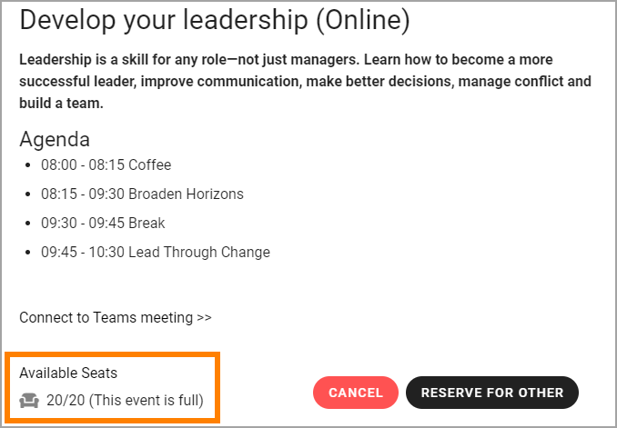
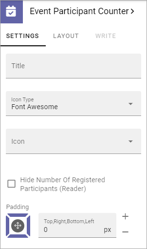

Event Participant Counter¶
This block is used to show the number of participants that has registered for the event and the number of possible participants.
Here’s an example when an Event is fully booked:
Settings¶
The following settings are available for the block:
Title: Here you can add a title for the block. If variations exists, you add a title in the default language. All other languages are handled by variations. If no variations exists, you can add a title in several languages here.
Icon Type: Select an Icon Type here.
Icon: Choose the Icon in the Icon Type you have selected.
Padding: If some padding is needed between the block edges and the list, add it here.
Layout and Write¶
The WRITE TAB is not used here. The LAYOUT tab contains general settings, see: General Block Settings